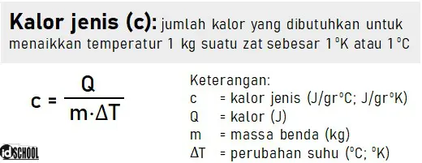

centi
digunakan untuk menuliskan prefiks centi (10
-2)

kecepatan suara
Laju bunyi atau kecepatan bunyi atau cepat rambat bunyi adalah istilah yang digunakan untuk menyebut kelajuan gelombang bunyi yang merambat pada medium elastisitas. Pada ketinggian air laut, dengan suhu 20 °C (68 °F) dan kondisi atmosfer normal, laju bunyi adalah 343 m/detik (1238 km/jam). Kelajuan rambatan gelombang bunyi ini dapat berbeda tergantung medium yang dilewati (misalnya bunyi lebih cepat melalui air daripada udara), sifat-sifat medium tersebut, dan suhu.
Molaritas
Molaritas (juga disebut konsentrasi molar, konsentrasi jumlah, atau konsentrasi zat) adalah ukuran konsentrasi dari spesies kimia, khususnya zat terlarut dalam larutan, dalam hal jumlah zat per satuan volume larutan. Dalam kimia, satuan molaritas yang paling umum digunakan adalah jumlah mol per liter, yang memiliki lambang satuan mol/L atau mol/dm3 dalam satuan SI. Larutan dengan konsentrasi 1 mol/L is said dikatakan sebagai 1 molar, biasanya ditulis sebagai 1 M.
Kalor Jenis
kapasitas kalor spesifik atau kalor jenis(simbol c p) suatu zat adalah kapasitas kalor suatu sampel zat dibagi dengan massa sampel, kadang juga disebut sebagai kapasitas kalor masif. Secara informal, itu adalah jumlah panas yang harus ditambahkan ke satu unit massa zat untuk menyebabkan kenaikan suhu satu unit. Satuan SI untuk kapasitas panas spesifik adalah joule per kelvin per kilogram , J⋅kg −1 ⋅K −1. Misalnya, kalor yang dibutuhkan untuk menaikkan suhu1 kg air dengan1 K adalah4184 joule , jadi kalor jenis air adalah4184 J⋅kg −1 ⋅K −1.
 sumber : idSchool.net